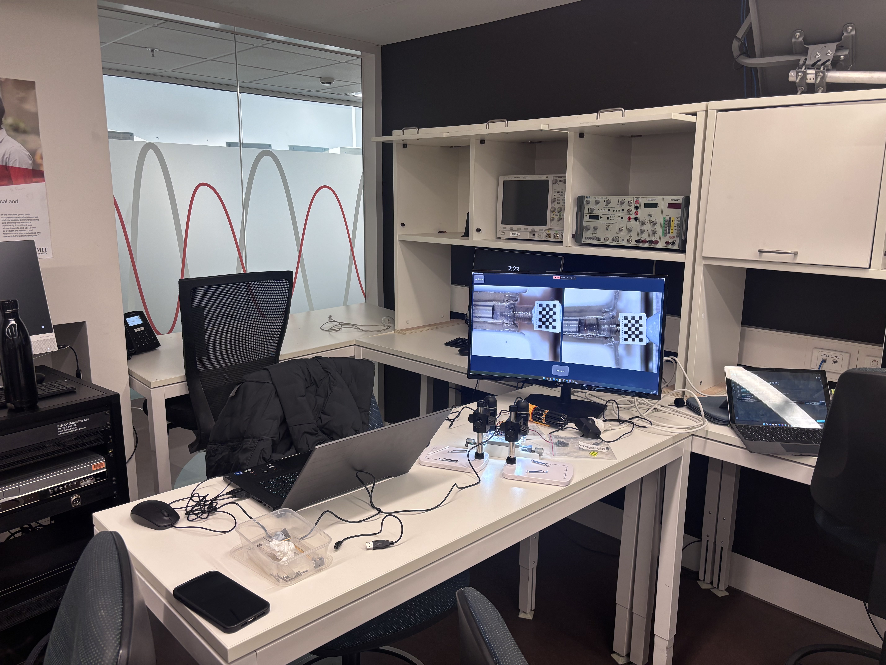
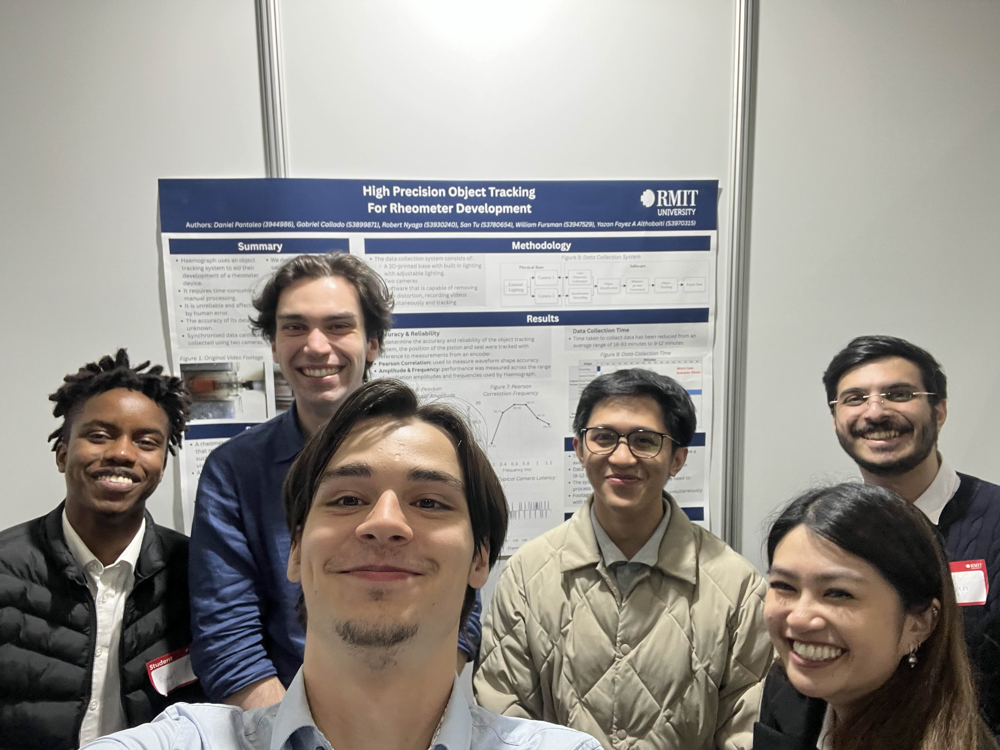
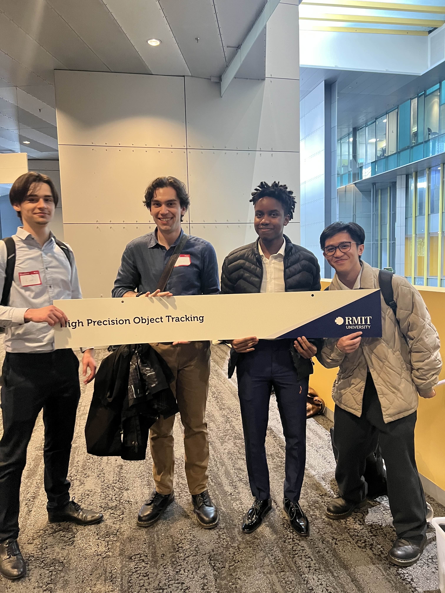

Capstone Project

Page created 25 April, 2026.
Last updated 29 May, 2026.
Background |
For my final year engineering Capstone Project, I was assigned to a group of five peers, the maximum group size for a project, under the academic supervision of Dr. Amirali Khodadadian Gostar. Our industry partner was a med-tech startup company called Haemograph, and the person we kept in contact with at the company was Mr. Kovalen Velvindron.
Haemograph tasked our team to research and develop a solution for tracking the positions of two oscillating pistons and the solicone seals on each of them. Understanding this difference of position between the piston (the input) and the seals attached at the end of these pistons (the output) would allow Haemograph to better develop their medtech product. I won't go into too much detail regarding the product that Haemograph are developing, partly out of respect for the intellectual property of Haemograph, but also because it is not entirely relevant in terms of understanding the solution that my team and I developed.
Haemograph had their own method of validating the positions of both the piston and the seals, which was done manually using image analysis methods. This method was extremely slow and they sought an automated solution. The rest was up to us.
Design |
A dual camera setup was used due to the distance between the two pistons meaning that both could not captured in a single camera frame. This has the caveat of introducing syncing issues between both recordings as well as frames being captured sequentially if both cameras were plugged into one controller. Our testing in later stages showed that this effect would ultimately be negligible once synced in our program. A top-down view of both pistons is required due to the design of the prototype, and so a design with camera stands that can hold two cameras in a stable, configurable position.
Early on in the design stage, we also resolved to combine all aspects of the program into a single, unified user interface and drew mock-ups for what we aimed to do.
Our chosen object tracking algorithm was sparse optical flow, combined with template matching.
Implementation |
This is what our final design looks like, all put together.
And this is our expo video that demonstrates the full functionality and flow of our program.
Engenius expo |

Engenius was an incredible opportunity to display all the hard work we put into our project over the last year.
Oh yeah... we also won the award for top project in Mechatronics and Manufacturing.
Genuinely, none of us expected to win the award. Some of the other projects around the expo were so impressive and had more spectacle to them (notably the team that built an entire cattle weighing station), but seemingly the industry representative from Airmaster that bestowed the award upon us liked ours the most.
If you could see the look on my face when they read our project name out, you'd think I can't figure out the punchline to this joke yet.
Ultimately we will never know exactly why we won the award, as the guy from Airmaster left before we could talk to him at the networking event after the expo. Oh well.
By the way, that's me in the blue shirt.

